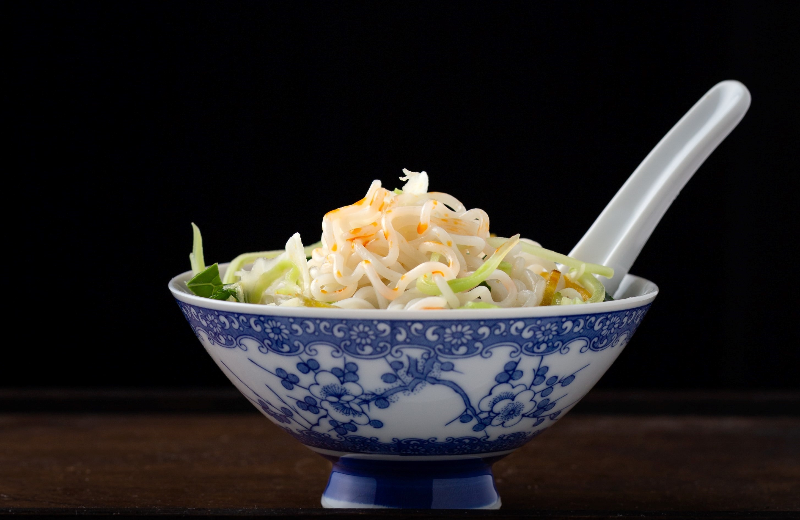
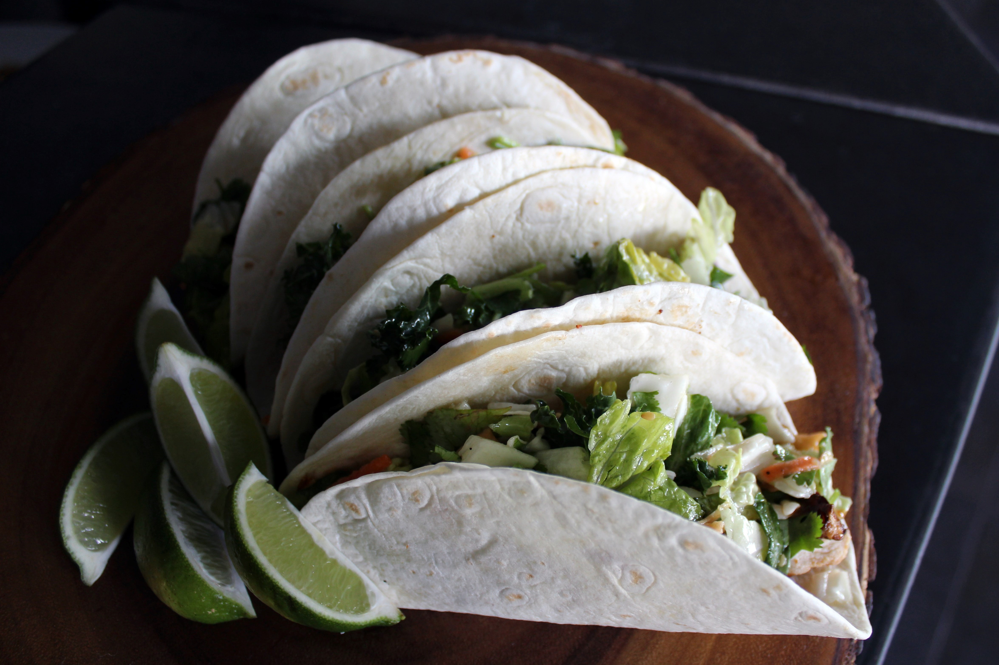
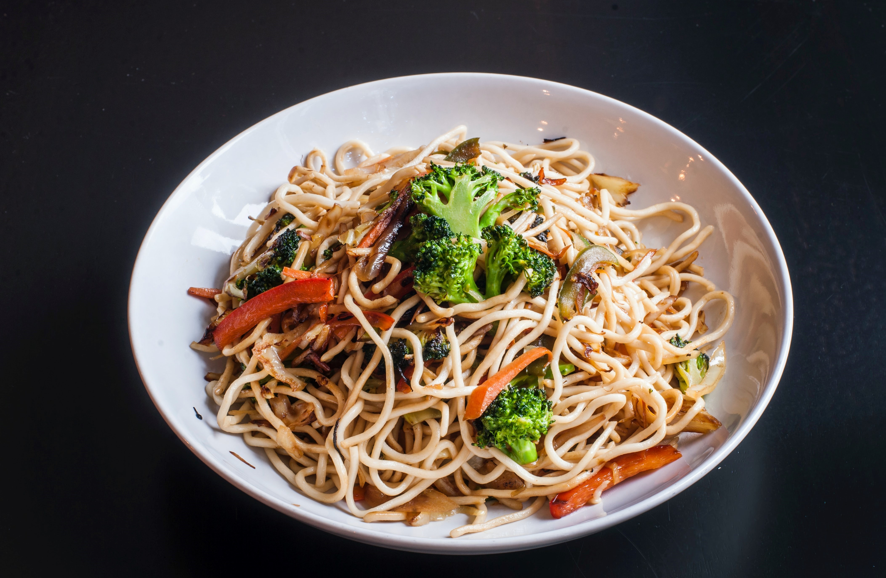
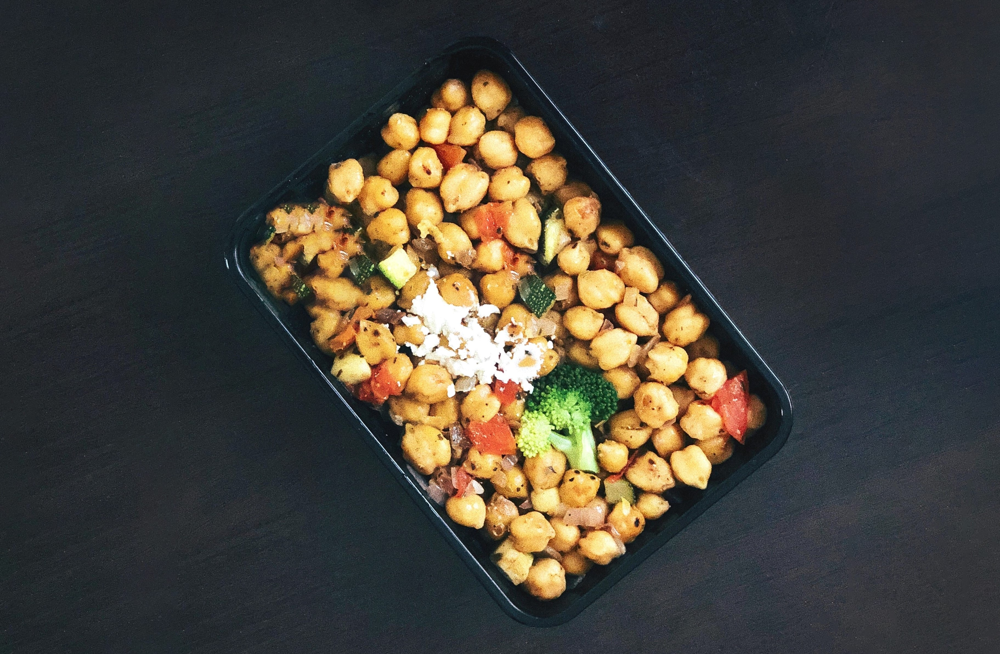
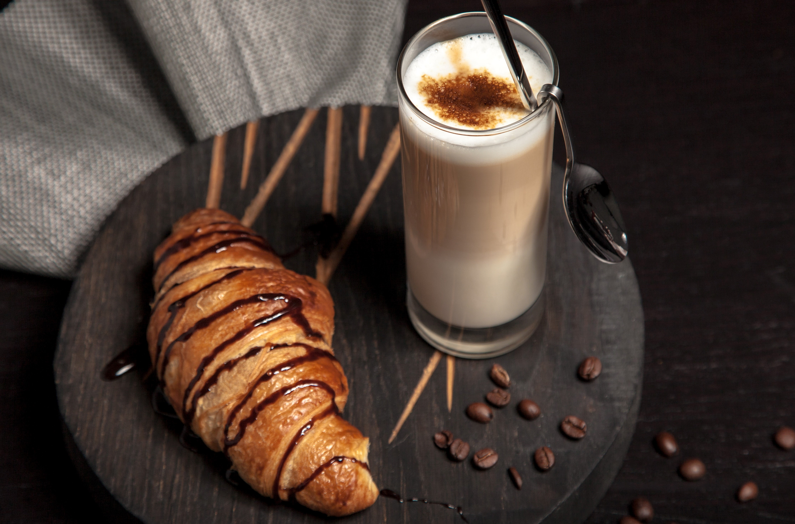

What cuisine are you craving?
-
American
 Thanks to the convenient location of your hotel, there are many American food options nearby, including:
Thanks to the convenient location of your hotel, there are many American food options nearby, including:
50's Prime Time Cafe
B. B. Wolf's Sausage Co.
Chicken Guy!
Chip N' Dale's Cafe -
Asian
Delicious noodles at a great price! There are several Asian restaurants in the Disney Springs and Disney Resort Areas, including:
Lotus Blossum Cafe
Morimoto Asia Street Food
Yak & Yeti Local Food Cafes
Yesake Kiosk -
Mexican
Orlando’s history with the Mexican population has allowed tourists to explore many authentic choices, including:
Choza de Margarita
Frontera Cocina
La Cantina de San Angel
San Angel Inn Restaurante
-
Italian
Italian food is a great choice for both in-person dining and delivery. Orlando offers some of the finest Italian restaurants in the state, including:
Il Mulino
Mama Melrose's Ristorante Italiano
Maria and Enzo's Restaurant
Blaze Fast Fire'd Pizza -
Indian
The Disney Springs area boasts several Indian restaurants, ranging from full dining experiences to quick bites, including:
Sanaa
Tabla Indian Restaurant
Punjab Kitchen
Ataj Indian Restaurant -
Quick Eats and Snacks
Looking for a quick meal to pick up on the way to another BPA meeting? The Disney area offers many affordable options, including:
Meadow Snack Bar
Marketplace Snacks
Dino-Bite Snacks
Starbucks